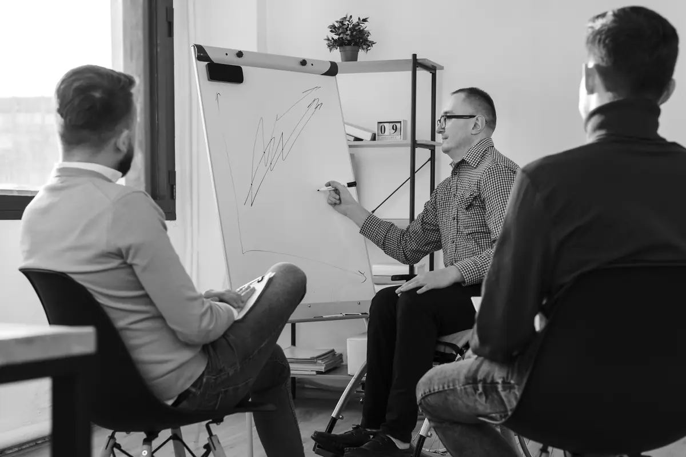

לאיש מכירות
אימון מכירות אישי בזום
לאיש מכירות שרוצה לעבוד על השיחות שלו, אחד על אחד. אפשר להביא הקלטה של שיחה אמיתית, ולפרק אותה יחד רגע אחרי רגע.
פיצ׳ | אימון מכירות | ביטוחי בריאות וחיים
אני אבינועם גריידי, מאמן מכירות. 8 חברות, 4 תחומים, וקורס מכירות שבניתי מאפס לימדו אותי דבר אחד: הלקוח קונה ממי שמקשיב לו, לא ממי שמדבר יפה.
41 רגעים משיחות מכירה אמיתיות. בסוף אתה מקבל את מפת הכושר שלך ואת הספר "הפוך גוטה" במתנה.
רגע אחד מתוך המבחןהתנגדויות
הלקוח אומר לך: "זה יקר לי." מה אתה עונה?
השריר שעבדת עליו עכשיו: זיהוי התנגדות. יש עוד 40 רגעים כאלה, ובסוף מפה של שישה שרירים.
הלקוח אומר "יקר לי", ואתה כבר באמצע הסבר למה זה לא יקר. הוא אומר "אני צריך לחשוב על זה", ואתה מנסה לסגור עכשיו. הוא שותק, ואתה ממלא את השקט. ואז הוא נסגר, ואתה לא בטוח למה.
זה לא חוסר כישרון. מגיל אפס לימדו אותנו לענות על שאלות ולא לשאול אותן, לימדו אותנו שמי שמדבר הכי הרבה צודק, ושלהקשיב זה בעיקר לחכות לתור שלנו לדבר. ורוב מה שמלמדים היום על מכירות רק מוסיף לחץ: עוד משפט מחץ, עוד טכניקת סגירה, עוד "אל תיתן לו לנתק".
השיטה שלי הפוכה גוטה.
וידאו מהשטח
כאן ירוץ קטע קצר מהסרטונים של אבינועם, בלי סאונד. ממתינים לקבצים המקוריים.
שלושה עקרונות שחוזרים על עצמם לאורך כל השיחה, במעגל, עד הסגירה.
לעמוד לצד הלקוח, לא מולו.
להסכים זה לא להגיד לו שהוא צודק. זה להפסיק להתווכח איתו. לקוח שמרגיש שנלחמים בו מחפש איך לצאת מהשיחה, ולקוח שמרגיש שמישהו לצידו מוכן להקשיב.
הלקוח: "אני כבר מרוצה מהספק שלי."
אתה: "אני שומע אותך, וזה הגיוני שלא תחליף ספק סתם."
לענות על אמירה בשאלה.
כל המערכת שגדלנו בה אימנה אותנו לענות. אבל בשיחת מכירה מי ששואל מוביל, ומי שעונה נגרר.
הלקוח: "אני רק רוצה לדעת מחיר."
אתה: "מה הכי חשוב לך בזה, לראות את המשחק מקרוב או כל החוויה מסביב?"
אחרי השאלה, שקט.
רובנו לא מקשיבים, אנחנו מחכים לתור שלנו. אחרי ששאלת, אתה נותן ללקוח לסיים, ושם לב גם למה שהוא לא אומר.
התרגיל: אחרי כל תשובה של הלקוח, ספור שתי שניות בלב לפני שאתה מדבר.
זה לא רצף שעוברים פעם אחת. ההסכמה פותחת את הדלת לשאלה, השאלה דורשת הקשבה, וההקשבה מולידה את ההסכמה הבאה.
וזה לא טריק שכנוע. המטרה היא לגלות אם יש בכלל התאמה, ואם יש, לעזור ללקוח להבין את זה בעצמו.
בוא נבדוק איפה אתה עומדחדר הכושר לאנשי מכירות
41 רגעים אמיתיים משיחות מכירה, מהפתיחה ועד הסגירה. בכל רגע יש שלוש תגובות, ואתה בוחר את מה שבאמת היית עושה, לא את מה שנשמע נכון. בסוף אתה מקבל מפה של שישה שרירים: איפה אתה חזק, ואיזה שריר כמעט לא אימנת.
לא צריך להירשם כדי להתחיל. בסוף, הספר "הפוך גוטה" במתנה.
השריר החזק: שאלה
החוליה החלשה: אומץ לסגור
63/100 יש בסיס
בחודש הראשון שלי ביס, כנציג שטח, התביישתי שישמעו אותי. אחר כך, במוקד של טיקטיק, קראו לי "הלוחש", כי כמעט לא שמעו אותי. ולאט, זה נפתח.
המנהל שלי בטיקטיק אמר לי משפט ששינה הכל: "אתה מוכן ללמד אנשים למכור." בחברת הביטוח הבאה, ביום הראשון, אמרתי למדריך שלי שאני רוצה את התפקיד שלו. לקח לי חודשיים לסגור עסקה ראשונה. בסוף קיבלתי את תפקיד ההדרכה, ובניתי את קורס המכירות מאפס, כך שכל שיעור בו מקביל לשלב אחד בשיחה אמיתית.
"אין צורך בי. אבינועם בנה קורס מושלם ושיטה פגזית."
יועץ מכירות חיצוני, אחרי שישב על הקורס
בסך הכל מכרתי ב-8 חברות וב-4 תחומים: ביטוח, תיירות, סיטונאות ותקשורת. נכשלתי, פוטרתי, וחזרתי, וכל פעם כזאת נכנסה לשיטה. היום אני מלמד את מה שהייתי צריך לשמוע בחודש הראשון שלי.
סרטונים קצרים על מה שקורה באמת בשיחות מכירה.
שאלות שיקוף
בוא תניע את הכלכלה
לחשוב על זה
בקרוב
מקום שבו מאמנים כל שריר של שיחת מכירה, אחד אחד, עד שהוא עובד גם כשהיעד החודשי לוחץ. מי שברשימת ההמתנה שומע ראשון כשהדלתות נפתחות.
שלושת העקרונות, סיפורים מהשטח, ותרגילים לשיחה הבאה שלך.
הספר נפתח מיד אחרי השליחה, ועותק מגיע גם למייל.
עוד לא עשית את המבחן? להתחיל אותו עכשיוהכל נבנה על אותה שיטה. ההבדל הוא רק כמה אנשים יושבים מולי.
לאיש מכירות
לאיש מכירות שרוצה לעבוד על השיחות שלו, אחד על אחד. אפשר להביא הקלטה של שיחה אמיתית, ולפרק אותה יחד רגע אחרי רגע.

למנהל, לסוכנות או לחברת ביטוח
למנהל שרוצה שפה משותפת לכל הצוות. הדרכה על השיטה, מותאמת למוצר שלך ולהתנגדויות שהנציגים שומעים כל יום.
לסוכנות או לחברת ביטוח שצריכה קורס מכירות מסודר לנציגים חדשים. כמו הקורס שבניתי מאפס: כל שיעור מקביל לשלב אחד בשיחה.
אני חוזר אליך בעצמי.
לא. ההתמחות שלי היא ביטוחי בריאות וחיים, אבל השיטה נבנתה ב-4 תחומים: ביטוח, תיירות, סיטונאות ותקשורת. היא עובדת בכל שיחה שבה יש לקוח שצריך להחליט.
לא. השיטה לא נועדה לגרום ללקוח לקנות משהו שהוא לא צריך. היא נועדה להפוך את השיחה לאמיתית, כדי שתגלה אם יש התאמה. ואם יש, הלקוח מבין את זה בעצמו.
המבחן יגיד לך. גם אנשי מכירות ותיקים מדלגים על שלבים כשהיעד לוחץ, ובדרך כלל זה בדיוק הרגע שבו הלקוח נסגר.
את הספר "הפוך גוטה" מיד, ואתה שומע ראשון כשחדר הכושר נפתח.
תגובות מטיקטוק, מאנשים שאני לא מכיר בכלל